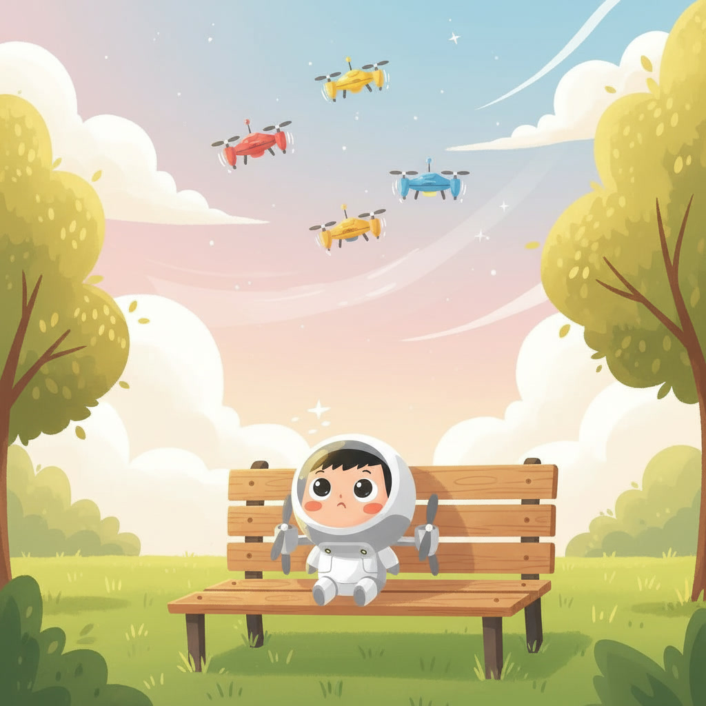
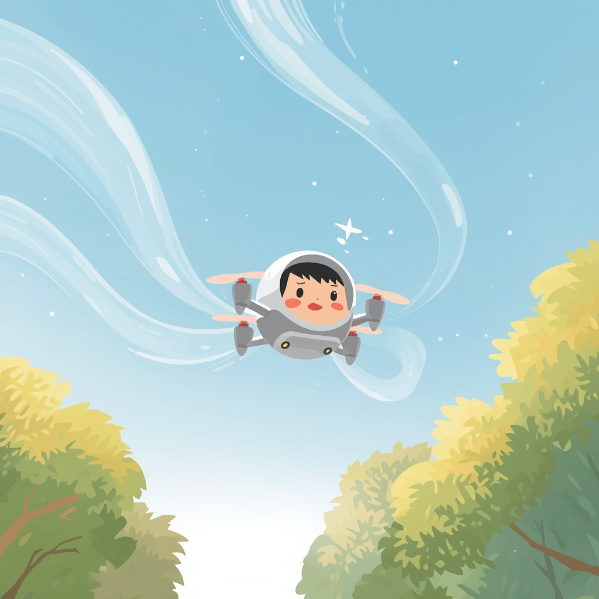
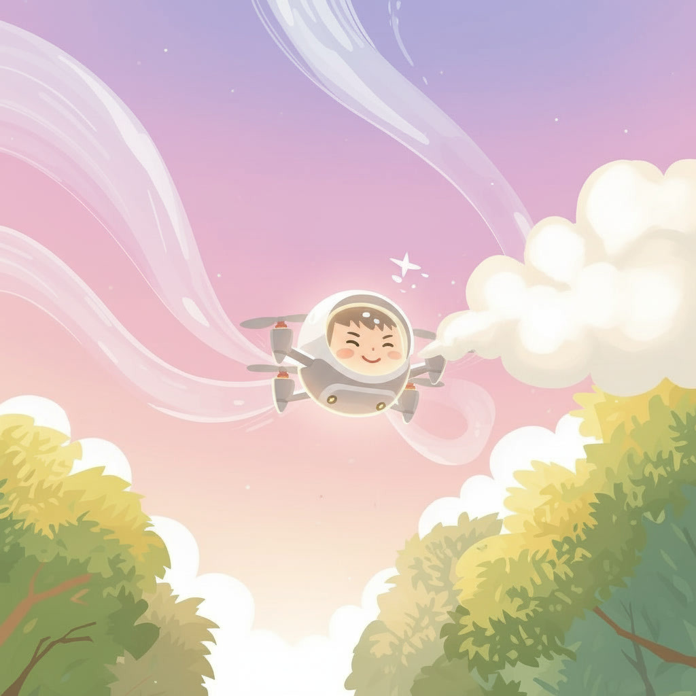

En un parc ple d’arbres verds i flors de colors, cada tarda s’omplia el cel de petits drons que volaven amunt i avall. Volaven ràpid. Volaven alt. Feien voltes i piruetes com si ballessin amb els núvols. A sota, damunt d’un banc de fusta, hi havia en Dani, un dron petit amb hèlixs noves i brillants. Dani mirava el cel amb ulls il·lusionats. —Jo també vull tocar els núvols… —va dir fluixet. El seu creador, en Mec, li va fer una carícia suau. —Ho faràs, Dani. Però cada cosa al seu temps.
Dani va encendre els motors. Bzzzzzz… Va pujar un metre. Dos metres. Tres metres. Però de sobte va mirar avall. El terra li va semblar molt lluny. Les hèlixs li van començar a tremolar. —I si caic? —va pensar espantat. Va baixar ràpidament i es va quedar en silenci. Aquella nit, Dani no estava trist… però sí decebut. Volia ser valent com els altres drons. L’endemà ho va tornar a intentar. Va pujar una mica més. Només una mica. El vent suau del parc, en Ventí, va bufar. —Uuuuuuu… Dani es va moure d’un costat a l’altre. —No puc! —va dir. Però en Mec el va animar: —Ahir no arribaves fins aquí. Dani va pensar-hi. Era veritat.


Cada dia, Dani pujava una mica més. De vegades el vent el feia baixar. De vegades les hèlixs vibraven massa fort. Però cada vegada que tornava a terra, no es rendia. Practicava. Ajustava les hèlixs. Escoltava el vent. I ho tornava a provar. Un matí, el cel estava clar i blau. Dani va enlairar-se. Un metre. Dos metres. Cinc metres. Deu metres. El vent va bufar. —Uuuuuuu… Però aquesta vegada Dani no va tenir por. Va recordar tot el que havia practicat. Va inclinar-se una mica. Va estabilitzar les hèlixs. I va continuar pujant. Cada cop més alt. Cada cop més segur. Fins que… va tocar un núvol petit i suau. Era fresquet i lleuger. Dani va riure amb un brunzit alegre. —Ho he aconseguit! Des de baix, en Mec aplaudia orgullós. Però Dani va entendre una cosa molt important: No havia tocat el cel perquè fos el més ràpid. Ni perquè fos el més gran. Havia tocat el cel perquè cada dia havia intentat volar una mica més amunt. I des d’aquell dia, cada cop que algú li deia: —Dani, com has arribat tan alt? Ell responia: —Un metre cada dia. I el cel, que abans feia por, es va convertir en el seu lloc preferit.